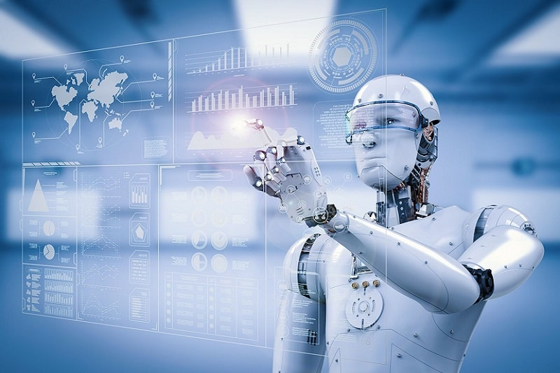

LA ROBOTICA
Qué es la robótica y para qué sirve
Desde hace décadas los robots se han insertado en diferentes ámbitos de nuestra cultura y sociedad. Los hemos visto en el cine, en épicas películas de robots
como Terminator, Yo Robot y por supuesto Transformers, que junto a Mazinger Z fueron aquellos legendarios dibujos animados de robots japoneses que nos acompañaron en la infancia.
El pasado era ficción, y en el presente, nos encontramos rodeados de diferentes tipos de robots que nos ofrecen un futuro apasionante.

La implantación de robots en prácticamente todos los ámbitos de la sociedad está avanzando vertiginosamente. Un selecto grupo de países lideran la instalación de robots a
nivel mundial, y son Estados Unidos, China, Japón, Corea del Sur y Alemania.
Su principal objetivo es abaratar los costes de producción, y aunque hasta hace pocos años, únicamente los veíamos en el sector industrial automatizando puestos de trabajo,
ahora también disfrutamos de los robots en hoteles, bares, bancos, consultas médicas, ejerciendo de policías o en catástrofes naturales.
Definición de robótica
Podemos definir el significado de la robótica
como una ciencia que aglutina varias ramas tecnológicas
o disciplinas, con el objetivo de diseñar maquinas robotizadas
que sean capaces de realizar tareas automatizadas o de simular
el comportamiento humano o animal, en función de la capacidad
de su software.
Definición de qué es un robot
Definimos qué es un robot como una entidad autómata compuesta por mecánica artificial y un sistema electromecánico. Ha sido creado a partir de la investigación
de la ciencia y la tecnología. Un robot se diferencia de un bot en que está compuesto de mecanismos físicos y tangibles, mientras que el bot se encuentra alojado en
un software dentro de un sistema virtual ubicado en la Nube (Cloud).